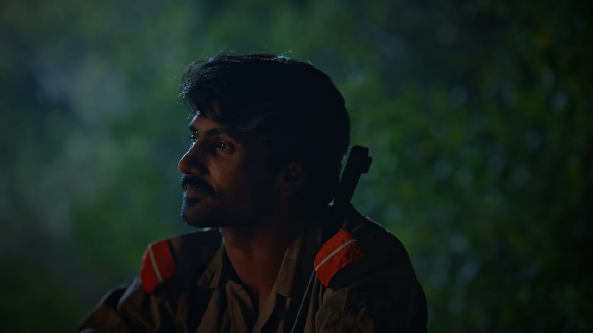

A SoldierBeside Me
Two soldiers question each other's fate on the frontline. A Soldier Beside Me is a short film exploring loyalty, war, and what it means to be human when everything around you falls apart.

A Soldier Beside Me, the short film
A Soldier Beside Me is an upcoming Pakistani war drama short film written, directed and produced by Ameer Hamza, with cinematography and editing by Syed Asad Raza Abidi, director of Janjaal. It stars Syed Mati Mukhtalif and Muhammad Affan, with Usman Ali Akber and Dayyan Khalid as assistant producers.
Two soldiers question each other's fate on the frontline — a short film exploring loyalty, war, and what it means to be human when everything around you falls apart. It is produced under the Cinegma Films banner alongside Zawaal as the studio's next original after Janjaal.
A Soldier Beside Me — questions
What is A Soldier Beside Me about?
A Soldier Beside Me is an upcoming Pakistani short film in which two soldiers question each other's fate on the frontline — a story of loyalty, war, and what it means to be human when everything around you falls apart.
Who directed A Soldier Beside Me?
A Soldier Beside Me was written, directed and produced by Ameer Hamza, with cinematography and editing by Syed Asad Raza Abidi, director of Janjaal.
Who stars in A Soldier Beside Me?
The film stars Syed Mati Mukhtalif and Muhammad Affan.
Is it "A Soldier Beside Me" or "A Soldier Besides Me"?
The film is officially titled A Soldier Beside Me. Some key art is styled "Besides Me" — both spellings refer to the same film.
Where can I watch the trailer?
The official trailer is embedded on this page and on the dedicated trailer page.